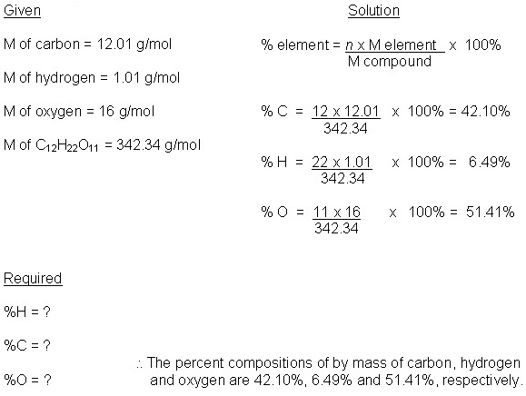

Unit 3: Quantities in Chemical Reactions
Activity 3: Percentage Composition, Empirical, and Molecular Formulas
Content
Law of Definite Proportions
|
|
Watch the video clip, Reaction of Carbon Dioxide and Magnesium... but please be aware, that, depending on your Internet connection speed, all clips on this page may take a few minutes to download. You can always continue reading the remainder of this page while you wait. |
|---|
The chemical word equation for the reaction between magnesium and carbon dioxide is as follows:
Magnesium + carbon dioxide  magnesium oxide + carbon
magnesium oxide + carbon
 Question
Question
- Write the balanced chemical equation for this reaction including the states of the reactants and the products.
 Answer
Answer|
|
Watch the clip titled Magnesium Thermoluminescence but please be aware, that, depending on your Internet connection speed, all clips on this page may take a few minutes to download. You can always continue reading the remainder of this page while you wait. |
|---|
Question
- Write the chemical word equation for the combustion of magnesium and oxygen gas and then write the balanced chemical equation.
In each of the above reactions, magnesium oxide is produced and the formula in each case is MgO.
Preparing and analyzing copper carbonate in many different ways, Joseph Louis Proust, 1754-1826, consistently found that its composition was always the same. Studying other compounds in a similar fashion, he was able to determine that their respective compositions were always the same. He proposed that there be a Law of Constant Composition.
John Dalton, 1766-1844, went a step further and proposed a Law of Definite Proportions in his Atomic Theory. Dalton included the idea that atoms chemically combined in simple definite numbers to form compounds. The list of examples is endless. Water is composed of 2 hydrogen atoms to 1 oxygen atom. Carbon monoxide is always 1 carbon atom and 1 oxygen atom.
Percentage Composition
In magnesium oxide, the ratio of atoms between magnesium and oxygen is 1:1. The mole:mole relationship between magnesium and oxygen is 1:1. However, on the basis of mass, the ratio is different in magnesium oxide. The common analysis of a compound to help determine its composition is its percentage composition. Percentage composition is the percent by mass of each element in a compound. The formula is as follows:
Percent composition of an element = n x molar mass of element x 100%
Molar mass of compound
 Example
Example
The molecular formula of sucrose (table sugar) is C12H22O11. Calculate the percent composition by mass of C, H, and O in this compound.
 Sample Solution
Sample Solution

Question
- Some pop drinks have caffeine as an ingredient. The molecular formula of caffeine is C8H10N4O2. Calculate the percent composition of each element in this compound.
This is a disclaimer. External Resources will open in a new window. Not responsible for external content.
Unless otherwise indicated, all images in this Activity are from the public domain or are © clipart.com or Microsoft clipart and are used with permission.